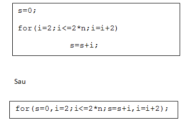

1. Cu test initial
2. Cu test final
3. Cu contor
1. Cu test initial:

2. Cu test final:

Observatie: daca secventa are cel putin doua subinstructinui atunci acestea se grupeaza intre { si } (ca la instructiunea if)
3. Cu contor:

Observatii:
- Instructiunea for are intre ( si ) trei expresii, separate prin caracterul ;
• -Prima expersie- da contorului valoarea initiala. Ea poate contine si alte initializari de variabile, separate prin virgula
• -A doua expresie- este o conditie care verifica daca valoarea contorului a ajuns la vf. La fel, putem avea mai multe conditii separate prin operatori logici
• -A treia expresie – creste sau descreste contorul. Uneori poate contine si alte instructiuni de atribuire.
Exemple:
Daca avem de scris un algoritm care calculeaza valoarea sumei S=2+4+6+…+2*n, putem scrie:
